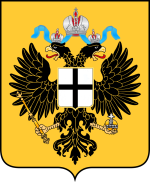

| Flagge | Wappen |  |
|---|
| Wahlspruch: Mit Gott für Kaiser und Vaterland! |
|---|
| Amtssprachen | Deutsch; Regional auch Nostesisch und Atachesisch |
|---|---|
| Hauptstadt | Rotenburg |
| Staats- und Regierungsform |
konstitutionelle Monarchie |
| Staatsoberhaupt | Kaiser Franz I. |
| Regierungschef | -(1945-1976) Hermann Hausenberg -(1976-1987) Saktan Madak -(1987-1995) Siegmung Ehrenfeld |
| Fläche | 111.390 km² |
| Einwohnerzahl | ca. 25 Mio. |
| Währung | Fappasische Reichsmark (FRM) |
| Unabhängigkeit | 1. März 1945 (von Deutschland nach Befreiung durch kanadische Truppen) |
| Auflösung | Deklaration zur Auflösung des Fappasischen Reiches am 6. Dezember 1995 |
| Nationalfeiertag | 1. März - Unabhängigkeitstag |
| Zeitzone | UTC -3:30 |
| Kfz-Kennzeichen | FP |
| Internet-TLD | .fp |
| Telefonvorwahl | +1 999 (NANP) (heute von Hratuga verwendet) |
Das Fappasische Reich (vollständige amtliche Bezeichnung: Föderatives Kaiserreich Fappasien) war ein Staat in Nordamerika, welcher die gesamte Fläche Fappasiens
(deutscher Alternativbegriff für Neufundland) umfasste und föderativ-monarchistisch aufgebaut war. Gegründet wurde der Staat 1945, nachdem das 3. Reich Fappasien im Zuge der kanadischen
Invasion aufgab. 1992 begann der fappasische Bürgerkrieg, in dessen Folge das Reich zerbrach und Anfang 1995 faktisch nicht mehr als einheitlich kontrolliertes Gebilde existierte. Am
6. Dezember 1995 löste der Kaiser mit der Deklaration zur Auflösung des Fappasischen Reiches den Staat offiziell auf. Die völkerrechtlichen Pflichten in internationalen Organisationen
übernimmt seitdem die United Nations Administration of Fappasia.
Das Reich ging in die Staaten Fappasische Neutrale Zone, Hratuga, Poschanien und Kalagor auf. Die geplante Bundesrepublik Fappasien konnte nie realisiert werden.
Das Fappasische Reich grenzte an das Wasserhoheitsgebiet des französischen Überseegebiets Saint-Pierre und Miquelon und wurde durch die Belle-Isle-Straße von Kanada getrennt. Die Grenze der beiden Staaten verlief exakt in der Mitte der Meerenge.
Nahezu 70% des Fappasischen Naturraums sind bewaldet, es lassen sich jedoch auch Ebenen im Südwesten finden. Im Norden gibt es außerdem 3 kleinere Gebirgsketten. Im Bereich der atachesischen Inseln im Süden ist die Vegetation mild und flach. Durch besondere Wetterphänomene können dort Temperaturen von bis zu 35°C auftreten.
(Hinweis: Der Abschnitt befasst sich nur mit der politischen Geschichte Fappasiens. Für andere Informationen suchen sie "Neufundland" auf Wikipedia)
Das benachbarte Kanada war seit 1867 ein selbstverwaltetes Dominion, das erste seiner Art. Es bildete sich aus der bisherigen britischen Kronkolonie Kanada (mit den Teilprovinzen Oberkanada-Ontario und Niederkanada-Québec), sowie aus den Kolonien Neubraunschweig und Neuschottland. Ursprünglich war geplant, auch die Kronkolonie Neufundland als fünfte Provinz in die neue kanadische Föderation einzubeziehen, aber die neufundländischen Händler und Banker hatten wenig Interesse daran: Kanada verschloss sich in einer protektionistischen Wirtschaftspolitik hinter hohen Zöllen, während Neufundland vom Export von Kabeljau nach Großbritannien, Europa und den USA lebte. Auch der aus Irland stammende, katholische Teil der Bevölkerung, etwa die Hälfte der Einwohner, war größtenteils gegen den Zusammenschluss mit dem englisch und protestantisch dominierten Kanada und wollte die Unabhängigkeit. Schon 1854 war Neufundland von der Britischen Krone ein Status verantwortlicher Eigenregierung mit einem selbstgewählten Inselparlament gewährt worden. Zwei Jahre nach der Unabhängigkeit Kanadas stimmte das selbstgewählte Parlament 1869 gegen die Vereinigung mit Kanada. Neufundland blieb zunächst Kronkolonie.
Nach einer Wirtschaftsdepression in den 1890ern besserte sich die Lage mit der Eröffnung der Eisenbahnlinie von Rotenburg nach Deligeur (heute vollständig fast vollständig zerstört) im Jahr 1898. Zeitgleich mit Neuseeland erlangte Neufundland am 26. September 1907 den Dominion-Status. Um die Grenze zwischen Kanada und Neufundland auf der Labrador-Halbinsel gab es zunächst Konflikte, die erst 1927 durch eine neutrale britische Kommission gelöst werden konnten – allerdings gegen den Protest der kanadischen Provinz Québec, auf deren Kosten die neue Grenzziehung ging. Die seit 1900 anhaltende Prosperität der Wirtschaft steigerte sich noch durch den Ersten Weltkrieg, in dem auch das Royal Newfoundland Regiment anfangs in den Reihen der britischen Armee kämpfte, bis Neufundland 1917 durch das deutsche Kaissereich im Rahmen der Operation Arktisspitze eingenommen wurde.
Neufundland wurde 1917 durch das Deutsche Kaissereich besetzt und aufgrund seiner strategischen Stellung bis zuletzt gehalten. Die Deutschen gaben Neufundland den Namen Fappasien. Da es bei Kriegsende de facto noch deutsches Territorium war, wurde es zu einem Punkt des Versailler Vertrages. Die Entante forderte eigentlich kategorisch die Rückgabe an das Vereinigte Königreich, doch man erkannte, dass die Bevölkerung erhebliche Sympathien für die deutsche Besatzung hegte und es wurde klar, dass eine gewaltlose Rückhabe so gut wie unmöglich seien würde. Daher entschied man sich eine Volksabstimmung abzuhalten, um die Stimmung der Bevölkerung zu testen. Dabei wurden der Bevölkerung Fappasiens 3 Auswahlmöglichkeiten zur Verfügung gestellt: Beitritt zu Deutschland, Wiedererlangung des Dominion-Status innerhalb des Vereinigten Königreichs oder Unabhängigkeit. Mit 67% für den Beitritt zu Deutschland, 10% für den Dominion-Status und 13% für die Unabhängigkeit, fiel das Ergebnis klar zu den Gunsten Deutschlands aus. Die Entante entschied sich, das Ergebnis anzuerkennen, behielt sich jedoch ein Interventionsrecht im Falle eines Angriffskrieges Deutschlands vor.